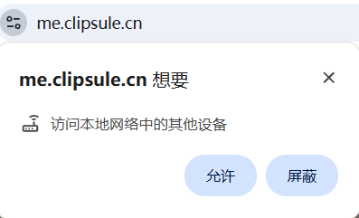
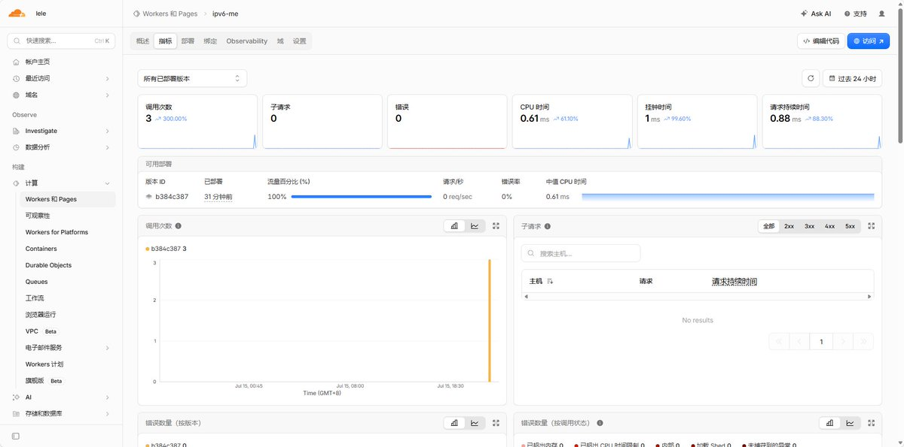
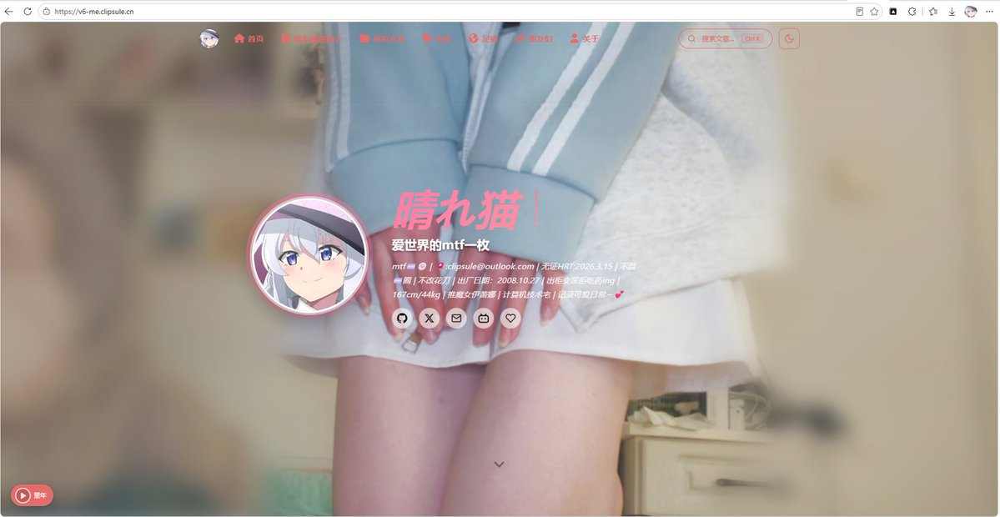

@csl1027 呃呃呃
页面逻辑有大问题，音乐自动播放这点很怪，更怪的是切其他页面或者点击文章后音乐居然会重新加载切歌
其次是IPv6完全可以通过子域名同时解析A和AAAA来实现双栈访问
至于境内外监管合规问题，如果你用了cloudflare cdn或者转发业务，就不要把源站服务器放在境内，最好设立境外服务器

页面逻辑有大问题，音乐自动播放这点很怪，更怪的是切其他页面或者点击文章后音乐居然会重新加载切歌
其次是IPv6完全可以通过子域名同时解析A和AAAA来实现双栈访问
至于境内外监管合规问题，如果你用了cloudflare cdn或者转发业务，就不要把源站服务器放在境内，最好设立境外服务器



终于搞好了,个人网站以支持IPv6访问,原理：访问https://t.co/69JEHol4Vo,如果识别到访问设备有IPV6,会自动跳转https://t.co/PdxHYPPPtG https://t.co/eMn1CvyqwN